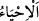
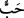
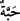
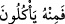
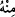

Yeniden diriltilme, Allah’ın huzurunda toplanma ve hazır edilme hususunda büyük bir
alâmet ve açık bir delildir.
Bundan sonra ölü toprağın nasıl delil olduğu açıklanmaya başlanmaktadır. Sanki bir
kimse: “Toprak nasıl âyet oluyor?” diye sormuş, Allah Teâlâ da şöyle buyurmuştur:
“Biz ona yağmurla hayat verdik ve ondan dane çıkardık. İşte onlar bundan” yâni o
dâneden “yerler.”
“__WORD__ hakîkatte hayat vermektir. Hayat ise his ve hareketi gerektiren bir sıfattır.
Burada mânâ şöyledir: Biz bahar mevsiminde hayat denizinden yağmur indirmek
sûretiyle toprakta gelişip büyüme kuvvetlerini harekete geçirdik ve türlü bitkilerle
parlaklığını yarattık. İşte yeniden diriliş de bunun gibidir. Biz cömertlik denizinden
indirdiğimiz yağmur serpintileriyle kabirlerde çürüyüp dağılan bedenleri diriltiriz. İlk
önce yoktan var ettiğimiz gibi onları yeniden diriltiriz.
“__WORD__ kelimesi “__WORD__ kelimesinin çoğulu olup un olarak öğütülen dâne ve sıkılıp yağ
elde edilen tohumdur. Burada kasdedilen insana erzak olmaya elverişli olan pirinç, darı,
buğday ve diğer hubûbat cinsidir.
“__WORD__ ifâdesinde sılanın (__WORD__) öne alınması, yenilen şeyler cinsini dâneye hasr
etmek için değildir. Aksi halde ondan başkasının yenilmemesi lâzım gelir. Bilakis bu
yenilen şeylerin çoğunu dâneye hasretmek içindir. Çünkü dâne, yenilen ve sâyesinde
yaşanan şeylerin çoğunluğunu oluşturur. İnsanların salâhı ona bağlıdır. O az olduğu
zaman salâh azalır, sıkıntı ve feryatlar çoğalır. O elden çıktığı zaman ruhların ve
bedenlerin düzeni bozulduğu için başarı kaybedilir. İşte bu yüzden Peygamberimiz (s.a.)
şöyle buyurmuştur: “Ekmeğe ikram edin/değer verin. Çünkü Allah Teâlâ ekmeğe değer
vermiştir. Ekmeğe değer verip hürmet edene Allah Teâlâ ikram eder.”[130] Yine
Peygamberimiz (s.a.) şöyle buyurmuştur: “Ekmeğe hürmet edin. Çünkü Allah Teâlâ
göklerin ve yerin bereketlerini, demiri, sığırı ve ademoğlunu ekmeği elde etmeye
âmâde kılmıştır. Tabak ve çanağı ekmeğin üzerine koymayın. Çünkü ekmeği horlayan
bir topluluğu mutlaka Allah açlıkla imtihan eder.”[131] Yine Peygamberimiz (s.a.):
“Allah’ım! Bizi İslâm ve ekmekle nimetlendir. Şayet ekmek olmasa oruç tutamaz,
namaz kılamaz, hac yapamaz ve cihad edemezdik. Bizi ekmek ve buğday ile
rızıklandır’[132] diye duâ etmiştir. Nitekim Bahru’l-ulûm’da böyle geçmektedir.
Şir’atü’l-İslâm’da der ki: “Ekmeğe mümkün olduğu kadar çok değer verilir. Çünkü
insanın yediği ekmeğin her lokmasında üç yüz altmış çalışanın emeği vardır. Bunların
ilki Allah’ın rahmet hazinesinden yağmur suyunu ölçerek gönderen Mîkâil (a.s.)’dır.
Sonra bulutları sürükleyen melekler, güneş, ay, felekler, hava melekleri, yeryüzündeki
diğer canlılar ve sonuncuları da fırıncıdır.
Şeyh Sa’dî der ki:
Bulut, rüzgâr, ay, güneş ve felek çalışmakta
Sakın eline geçen bir ekmeği yerken gaflet etmeyesin